Guion de demostración
Plataforma de gestión para estudios de tatuaje · recorrido en once pantallas
demo.memoria@estudio.cl y clientes inventados. No aparece ningún dato de personas
reales. La aplicación desplegada se muestra aparte, solo para dejar claro que está publicada.
1. Inicio de sesión
/
Punto de partida. Cada tatuador es dueño de sus datos: todo lo que viene después está filtrado por la cuenta que entra, y un artista nunca ve lo de otro. En la nube el registro está abierto, así que cualquier estudio puede crear su espacio.
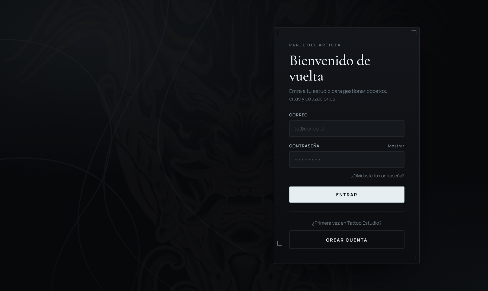
2. Resumen del día
/dashboard
Lo primero que ve el tatuador en la mañana: el calendario del mes y las próximas citas arriba, porque es lo que de verdad se mira. A la derecha, los insumos que llegaron a nivel crítico. Abajo, lo cobrado del mes —que suma por la fecha en que se marcó el pago, no por la fecha de la cita— y lo que queda por cobrar.
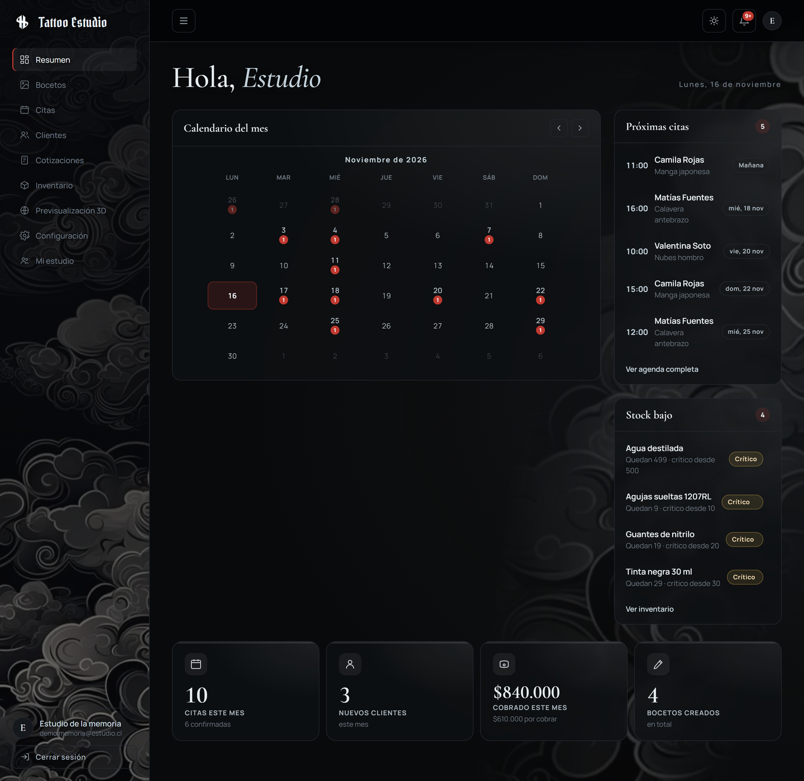
Si te preguntan por qué el calendario va arriba: fue una decisión del tatuador experto, no del diseño.
3. Galería de bocetos
/bocetos
Los diseños viven en la nube, con etiquetas y filtros para encontrarlos frente al cliente. Al subir cada imagen el sistema mide cuánta tinta lleva y qué colores dominan: eso es lo que después permite cotizar sin preguntar nada.
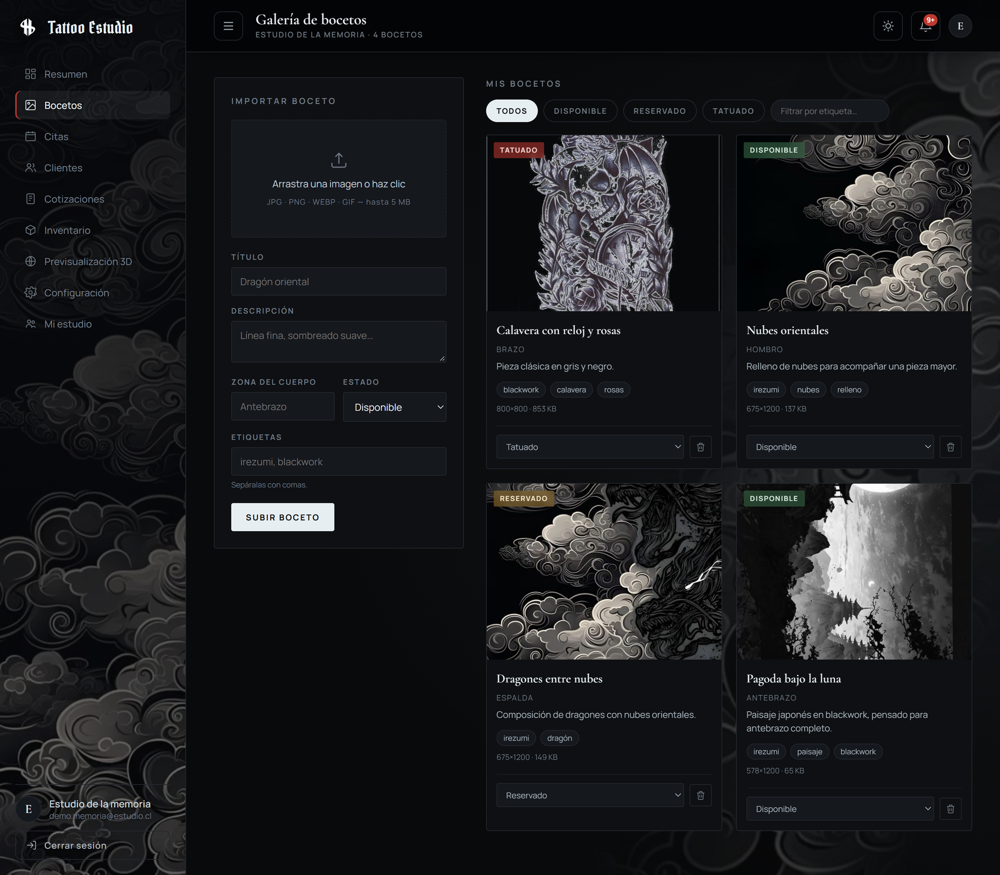
4. Previsualización 3D
/previsualizacion?proyecto=…
El módulo que distingue a la plataforma. El boceto se proyecta sobre un modelo anatómico y se envuelve en la curvatura del brazo en vez de quedar pegado como una calcomanía plana. Se mueve, se gira y se escala con el dedo o el ratón, y el tamaño que queda es una medida real en centímetros que pasa directo a la cotización.
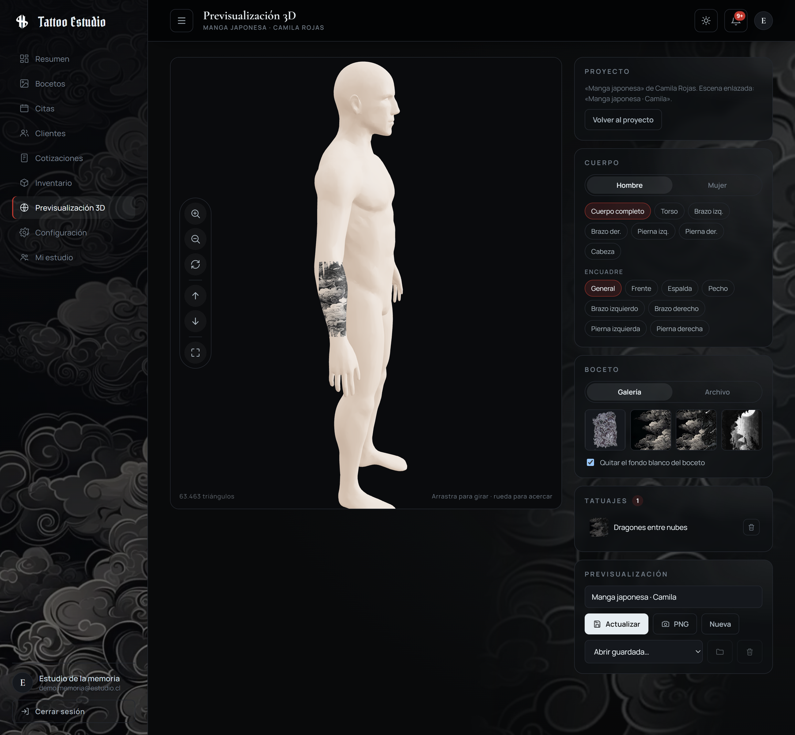
Aquí conviene mover el tatuaje en vivo: el arrastre sostiene 60 fotogramas por segundo sobre una malla de 63.000 triángulos, y eso se nota.
5. Agenda de citas
/citas
Calendario del mes con las citas de cada día. Agendar crea de paso el cliente y el proyecto si no existen, en el mismo formulario. Una hora ocupada no se vuelve a agendar: el sistema lo rechaza diciendo con quién choca y a qué hora.
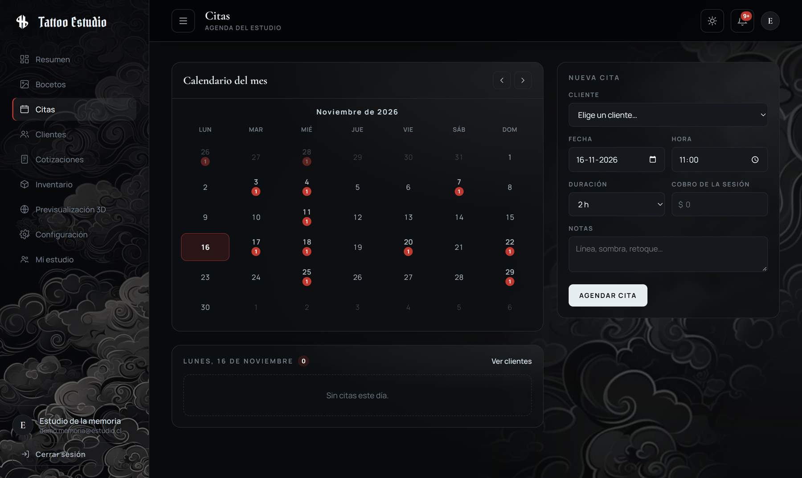
6. Clientes y su puntaje
/clientes
La cartera ordenada del cliente más cumplidor al menos cumplidor. El puntaje no se escribe a mano: es el promedio de las estrellas que el tatuador le pone a cada sesión según cómo llegó, así que se mantiene solo.
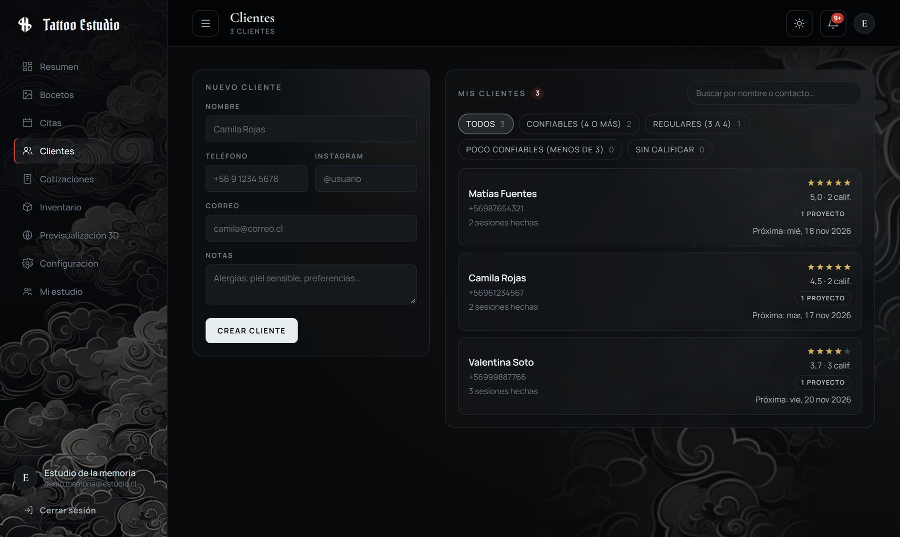
7. Ficha de un cliente
/clientes/:id
Contacto, proyectos y el historial: sesiones hechas, inasistencias y cancelaciones. Es lo que el tatuador mira antes de decidir si pide un abono.
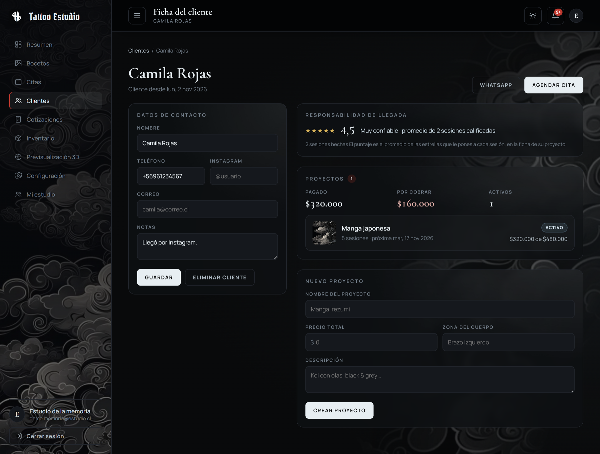
8. Ficha de un proyecto
/proyectos/:id
Un proyecto reúne sus sesiones, lo pagado y lo pendiente, las fotos del avance y los enlaces al boceto y a la escena 3D. Al dar una sesión por terminada se descuenta sola del inventario lo que esa cotización consumió.
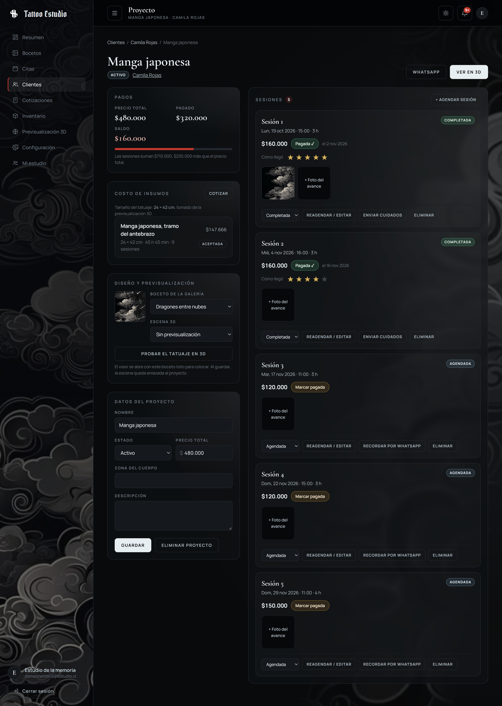
9. Inventario
/inventario
Cada artista arranca con un catálogo de 42 insumos típicos ya cargado, con precios de referencia; no parte de una pantalla vacía. Lo que define a un insumo es cómo se gasta —por área, por sesión, por hora— y eso es lo que lo hace entrar en la cotización.
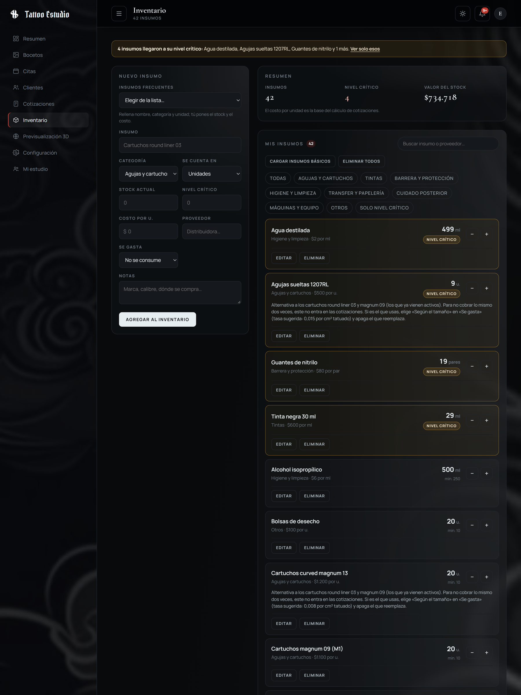
10. Cotización de insumos
/cotizaciones?proyecto=…
El cierre del recorrido, donde se junta todo: el tamaño viene de la escena 3D (24 × 42 cm), la cobertura de tinta la midió el boceto al subirse (82 %), y el motor reparte el área entre las tintas según los colores del dibujo en vez de cobrar todas. Calcula también las horas de aguja y en cuántas sesiones caben. Lo que entrega es el costo de insumos, nunca el precio del arte: eso lo pone el artista.
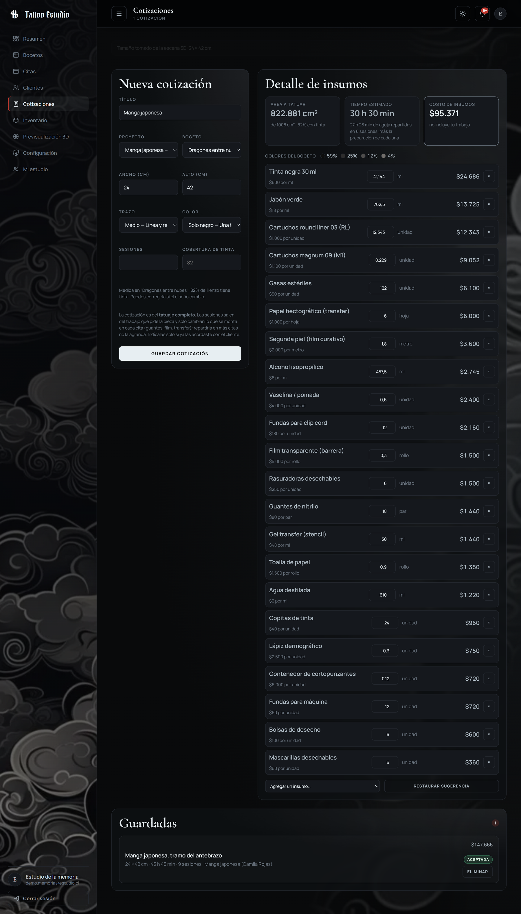
Vale la pena detenerse en el detalle: cada línea dice cuánto se gasta y a qué precio por unidad, y se puede corregir a mano antes de guardar.
11. Mensajes al cliente
/configuracion
El recordatorio sale solo 24 horas antes de cada cita y el cliente recibe aviso cuando su hora cambia o se cancela. El tatuador edita con sus palabras la nota del recordatorio y las indicaciones de cuidados, y ve la vista previa de cómo le llegará el mensaje.
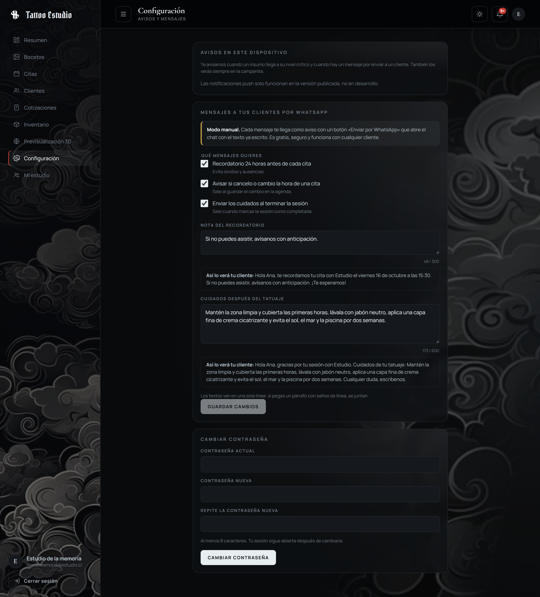